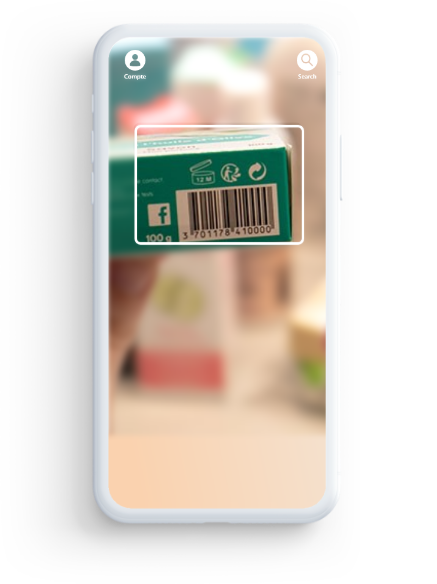
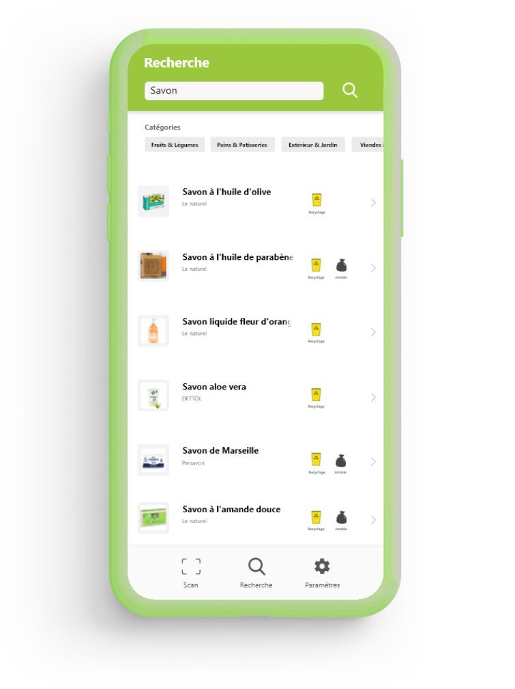

TriCycle
L'application qui vous aide à trier !
TriCycle est une nouvelle application qui vous propose diverses fonctionnalités, pour vous aider à mieux trier vos déchêts et à préserver la planète !
Vous n'aurez plus à vous demander où se trie tel ou tel produit, vous n'aurez qu'à le scanner avec TriCycle pour le savoir
Scan de produit
La fonction principale de notre application, le scan vous permet de connaître les composants d'un produit en scannant son code barre.
Recherche
Vous pouvez également utiliser la fonction "Recherche" pour savoir où jeter un produit sans le scanner.

Compte
Le profil vous permet de voir vos statistiques et vos points. Il regroupe également tout l'aspect communautaire.